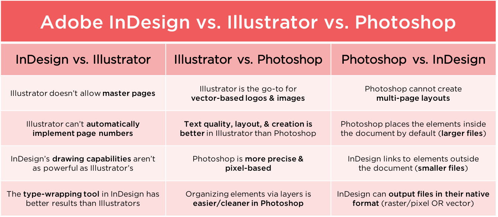

Raster vs. Vector
Raster:
- Dot-based
- Dots = pixels (sometimes)
- Cannot resize without quality loss
- Photoshop
Vector:
- Math-based (!)
- Uses geometry to create graphics (!)
- Infinitely resize while maintaining quality
- SVG, EPS
- Illustrator
What is Illustrator?
Adobe Illustrator is...
- a vector drawing application.
- the industry standard when it comes to creating graphics that can scale while maintaining resolution and clarity.
- completely resolution-independent and will never pixelate.
Common Question:
So should I use Illustrator for _________?
YES:
- Logotypes
- Brand marks
- Line-based artwork
NO:
- Photo-editing
(Photoshop)
- Text-layout
(InDesign)
MAYBE:
- Web layouts
- Email blasts
- Banner ads
- Multi-page documents
InDesign? Illustrator? Photoshop?
Some pros & cons of each:

Getting Around Illustrator
Preferences
Under the Illustrator menu.
- Units & Rulers
- Guides & Grid
Workspaces
are...
Saved arrangements of:
- tools
- tool panels
- keyboard shortcuts
- menus
Window > Workspace
Let's Develop It! 💻
Take a few minutes to customize your workspace
Creating and working with actual FILES!
But first...
Shortcuts!
Saving/Exporting
- Save & Save As
- Export > ...
- Asset Export
Let's Develop It! 💻
Take a few minutes to practice clipping masks, pathfinder, and saving/exporting in different way